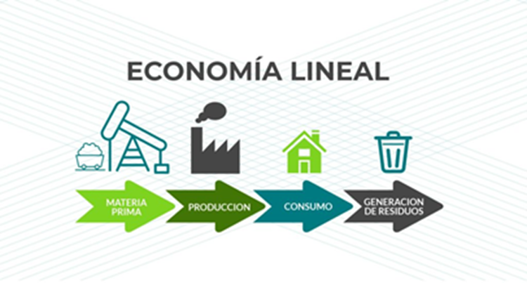

¿Qué es la Economía Lineal?
La economía lineal es el modelo económico tradicional y predominante del ultimo siglo. Se basa en la explotación intensiva de materias primas vírgenes para fabricar productos que, tras un periodo de uso, son desechados como residuos, generando un impacto ambiental irreversible. Es un sistema abierto que ignora los límites planetarios.
